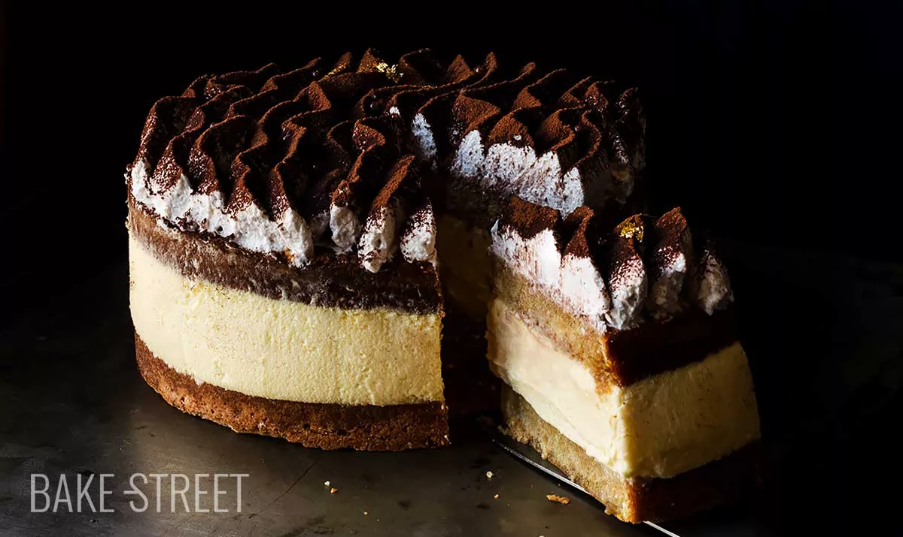
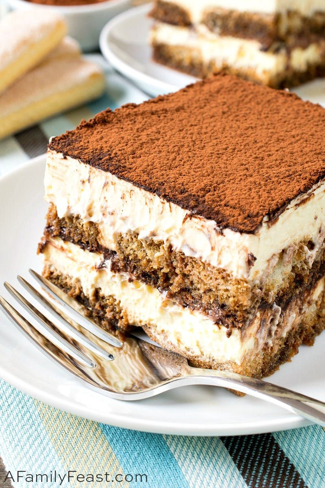
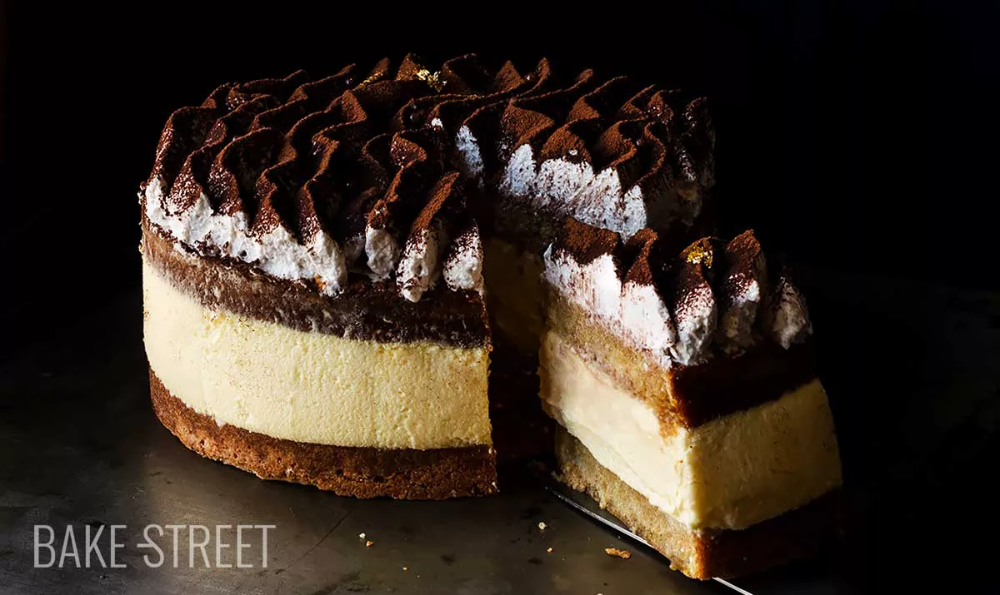
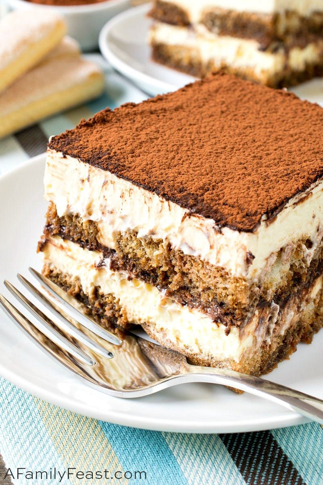
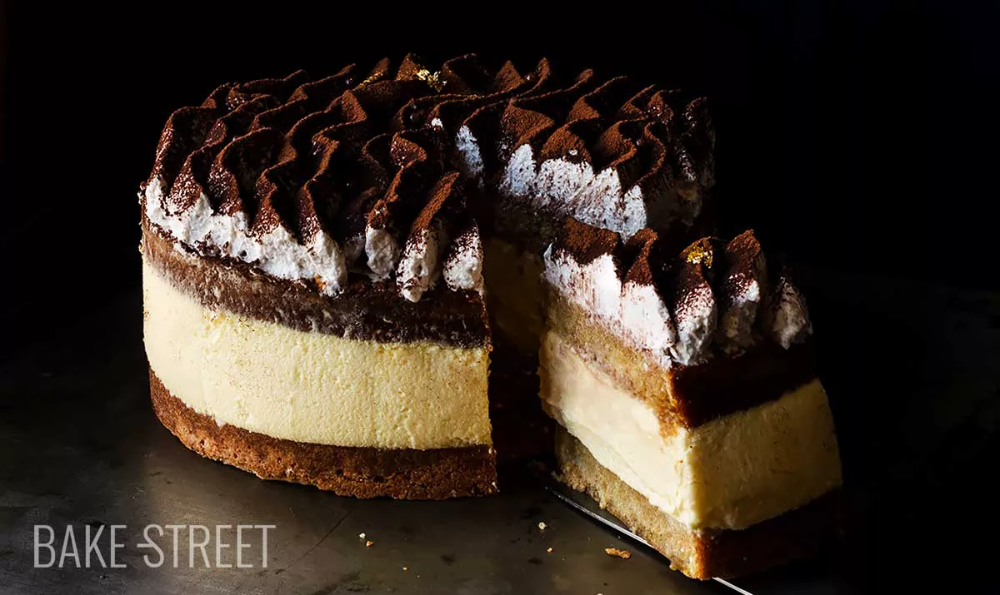
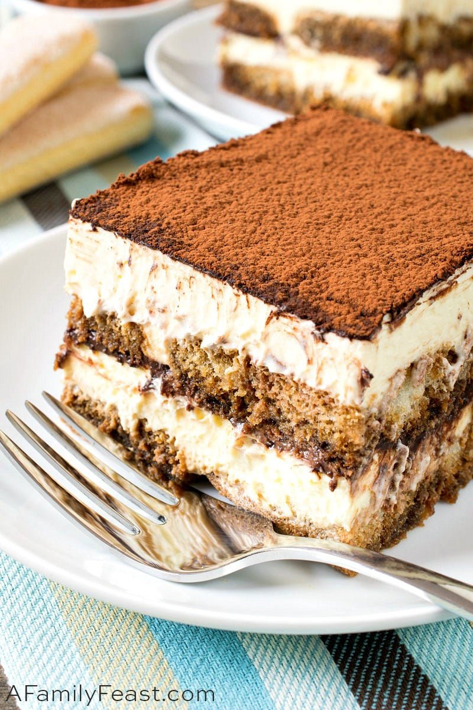

Before I start complaining, I'll say what I'm grateful for, and that’s the fact that my Wednesday professors are nice enough to have decided not to use Friday as a makeup day. One of them actually called it a cruel and unusual punishment lmao.
Actually, thinking about that made me laugh and I’m no longer in the mood to complain about anything, so let me tell you how I spent my Wednesday instead.
I made tiramisu for the first time. Believe it or not I actually ever only ate it once years and years ago, and all I remember was delicious moist coffee cake and cold cream. I’ve had it in the back of my mind all this time and I always wanted to try making it at least once.
Well… the first thing I messed up was my meringue. I had the tiniest bit of yolk in my egg whites, and it completely refused to stiffen although I kept the mixer at it for a full 30 minutes. I looked up possible remedies for failed meringue and tried a whole bunch of stuff for another solid half-hour before giving it up. At that point my egg whites were just a foamy-liquidy weird looking thing and I debated throwing it away or just using it, and I decided to just use it.
The result of that was that the sponge cake (the tiramisu was gonna be layers of sponge cake with mascarpone cream in between) came out more like a rubber cake, but it was edible.
The second thing I messed up was the coffee bath. You’re supposed to soak the cake layers with coffee before adding the cream to them, and the tutorial I was following said I had to use strong Italian coffee if I wanted a true coffee flavor, so I bought some. But when I prepared the coffee to use, it tasted so disgustingly bitter and weirdly sour to me that I couldn’t bring myself to add it to the cake. So I made some instant coffee instead.
The result of ---- that ---- was that my final cake had no coffee flavor at all… I guess the tutorial knew what it was talking about.
On the bright side though, I did get the mascarpone cream right, and I added a little extra sugar and vanilla, and it was really delicious without being too sweet, and I’m gonna have to try that recipe on other cake flavors.
The final product tasted… interesting. Not disgusting, definitely somewhat tasty, but the rubbery cake and lack of coffee flavor certainly show. I’ve been feeding it to my siblings who always come in very handy when I’m trying to find a way to dispose of unsuccessful cooking attempts.
I didn’t take a picture of the cake, so enjoy some professional, much-better-looking-than-mine tiramisu cakes I found on google :)
Cheers! Happy Academic break .

